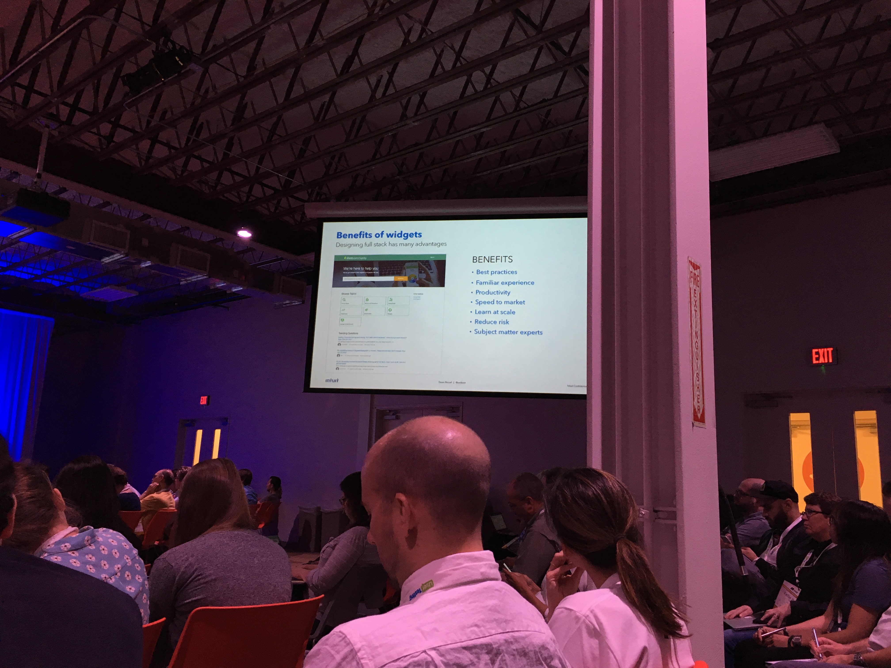

Design Systems: From Project Done to Project Done to Product Sustained, eightshapes, Nathan Curtis
Beyond the Toolkit
Day 1: All handles design leadership meeting: IBM
google system:
material design arc, diverse products that are cohesive visually, echoes of design decisions in ux, search, use of color blue and iconography
google docs, play, mail, calendar, chrome, you can see divergencies, New button, color, pair color with icon and text, produce unique identity
A design language big 3: Typography, color, iconography
Use same design system with different choices. visual style isn't just enough to make unification
Prioritize design system to make it a self sustaining enterprise
Design spec, Code library
Design system's reach
World's platform
An Enterprise's language
A portfolio's guide
Cisco, web marketing site: start with product section for selling, then support, training, about us
What's your get? Support. when people buy products, they are talking to sales
home page, avoid distractions, unstable patterns, get out of there. inject design system to all of them, start with navigation bar
Radiate influence Marriott from web apps, experiences shared with native apps and to websites, Marriott: reservation path
sun Microsystems: component library
Andrew maintained it and had to wait
Need to provide a tool and platform to help devs
Leah Buley
Federate influence that the people driving system to engage contributions and
Salesforce: cyclical team model, backlog and roadmap, shorter term pairings with orgs doing design, bringing influence in
sliding scale of giving a F, reveal passion for product to do and solve problems you need address
UVI: User experience, visual, interaction design
Need content in system and call it civx instead, designate go tos
mix doers with delegators.
Have a CEO who cares about design
Full-stack user experience: a marriage of design and technology, Dawn Ressel, Intuit
Surprising perspectives
Evolution of design systems:
Pattern libraries: doc of design, not a true design system
Component libraries: front end code, GE talk
Widget libraries: full stack code, functional on it's own and integrate

Past, present, future
A true design system must have a single source of truth in code
In the enterprise, how quickly and easily your design system can scale is directly proportional to the impact it can have
Intuit moved to cloud and made product more powerful, had a lot of data that could be connected wit independent products
One Intuit identity
Mint, quickbooks, turbotax
Interfaces were uneven quality and not sharing learnings and not unified
wanted to create a familiar experience across products
single identity, import mint user to make tax prep easier
Same account with additional product and show which products you've used in the past
Success story
Account recovery: dramatically increased user success rates: increase 10%
Quickbooks: were concerned about changing patterns with changing old way, AB test 13% increase success. 50% reduction support calls, $560,000 cost reduction
Roadblock: hacks on tax identity. Engineers had widget and were worried additional security would become a barrier. They needed to add them. Rolled out additional security in one week. massive reduction in fraud in 1 week
That team partnered with IRS to battle tax fraud, using code in open source fashion
on intuit dev widgets are being used to improved productivity and decrease time to market are being used in 100% of products
All products are financial management: upload data with doc, or take photo, experience should be the same whether work on budget or taxes
intuit link - used widgets
if can be reused, make it a widget, only use it when it makes sense
It is 1.5 times more investment to build something in a way that is reusable
Widget and component libraries are shared
How do I do it?
Close partnership with technologist, cross disciplinary team (work with engineers)
get them excited, frame it around user, not my design
don't start with how, start with problem space, let them decide how to build it
give them a tough challenge
get them to feel the customer pain
listen tot hem and have empathy, find their motivation
be specific and accurate to build credibility
How to handle resistance: overcoming barriers to working across teams
alignment can be slow
should this task work the same accountant and tax payer
start with single team with need and go really deep and look broadly across enterprise and embed with team, our designer as their designing. do research together. research bring people together
AB tests
paint a long term vision and what they can get in future
our medium is code for a user to benefit from
An Organizational Story: Salesforce lightening design system, Nalini P. Kotamraju
Researcher encounters a design system
CRM customer relation management tool. born on the cloud
lightning: changing ui design called lightning, revamp design system and ui
Good year for the design system: got attention
about people and relationships helped the success for Lightning, was not top down, off grid in corner
Hustle for buy in from executive, more scrappier than that
Theme 1: Solving Problems
how can we make cheaper cars for emerging middle class in India-- went smaller-- how do you solve people's problems and needs, family moped, Nano
salesforce mobile app with style guide for sales persons on the go
Customer and Partner's Needs: Customizations: Dreamforce hear from customer and partners
someone buy product, make it look like ours make it look like salesforce, changing css
Acquire a lot of code by acquisition, provide consistency across our products
Engineers don't like css
Implement removed gap between what designers want and developers deliver
Trust in design principles: clarity, efficiency, consistency, beauty
Create trust by showing not telling, living components were a conversation starter
sharing, brownbags, document, feedback surveys
trailhead, learning tool for free about salesforce
Open source to give back to community, we were putting ourselves on the map of representing salesforce
great at sharing and marketing outreach. two way part of feedback and push back and challenge when it wasn't working out. immediately responded in clarity of design system, external and internal. respond w/o ego
Helped put UX at the seat at the table in the room
QA
Non adopters to design system are the haters and more interested in power in the org and not efficient way to do things for customers and users
show benefit to them over and over again, haters get marginalized when others like it, topple
design systems emerge from development, stop repeating ourselves
legacy technology: re-architect tech to use design system, investment in future. our leaders need to understand it will pay dividends in the future
how do you get people to know things exist? publish in portal so people find and document